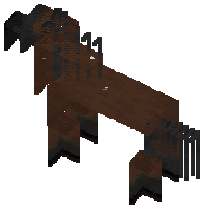
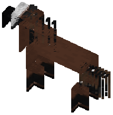
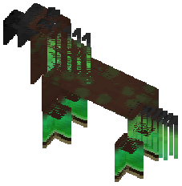
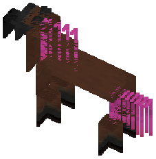
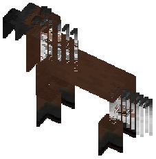
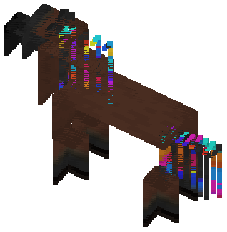
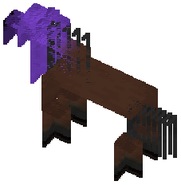
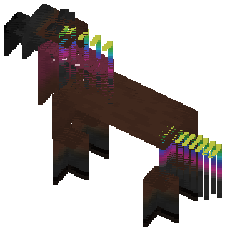
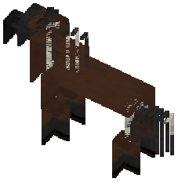

Magical genes / 9 in this family
Mane and tail
Genes that touch only the hair - gradients down its length, bands across it, and the spectrum run root to tip.
This page is generated. Every word below comes out of the gene's own
file - the same text the game shows - and the picture beside each one is that
gene on a standard bay, baked through the real coat pipeline. Regenerate with
:common:bakeGeneWikiPages after adding or changing a gene; see
GeneWikiTool for why these pages in particular are not hand-written.
Auroraband

One continuous ribbon running the length of the upper body in a shallow S, combed into fine lengthwise striations, and shifting hue from cyan at the front to magenta where it curls at the back.
Abd · n
| Auroraband | A single unbroken band, never two, never a detached piece. It starts at the mid-neck level with the throatlatch, drops as it crosses the shoulder, rises again over the barrel toward the croup and falls away over the hindquarter - two inflections, a shallow S. It is narrowest where it starts and widest at the two extremes of that curve, and it ends in a hook that curls back on itself. The fill is not flat: fine discontinuous striations run along the path, densest at the core and thinning to both margins, so the band reads as combed. The upper margin is firmer than the lower, and both are irregular because they follow where the striations end rather than any outline. Colour runs continuously along it, cyan through blue and violet to magenta, saturating and brightening as it goes. Small hard white points are scattered over the whole horse, in the band and out of it alike, evenly and with no relation to it. |
|---|---|
| Wild type | No ribbon. |
Corvid

A white wedge up the face with a black muzzle below it, black cannons over a thin white ring at the coronet, and black hair speckled white throughout.
Cvd · n
| Corvid | The face carries a white field from the muzzle boundary back over the nasal bone and orbits, narrowing to a wedge at the forehead, bounded along the upper cheek and hard-edged along a smooth curve throughout. Below it the muzzle is black to the nostrils, cut square across the nasal bone. Each leg has a white ring immediately above the hoof, the same height all the way round, with black from that ring up to about the knee and hock - and that upper boundary is the one soft edge on the whole marking. Mane, forelock and tail are black, carrying small hard white points through them, densest near the crest and dock, and a few long soft-edged streaks in the horse's own coat colour running with the fall of the hair. |
|---|---|
| Wild type | No corvid markings. |
Element Dusted

Three hues to a horse - one leading and two supporting - climbing the legs from the hoof, running down the far half of the hair, and settling along the topline as dapples.
Ed · n
| Element Dusted | On the legs the colour starts at the hoof and climbs a quarter to three-fifths of the way up, ending in a fade rather than a line, and no two legs end at the same height. It is palest and least saturated at the very bottom - near-white at the hoof on most horses - and gets deeper and stronger as it rises. The hair works the other way round from the legs: the roots keep the horse's own colour and the far half or better takes the palette, running toward near-white at the very ends. Along the topline, from withers to croup and no further down than the upper quarter of the barrel, is a field of soft round dapples in the leading hue at low saturation, which read darker than the coat rather than lighter. |
|---|---|
| Wild type | No dusting. |
Fade

The mane and tail leave the coat colour behind on their way down and end in a colour no horse's hair is, the shade running in the family.
Fd · n
| Fade | A smooth ombre down the length of the mane, forelock and tail: coat colour at the roots, giving way somewhere down the strand to a colour that has nothing to do with the horse. Where the fade is pale the shift is barely a shift at all and you could miss it; where it is deep the far half of the hair is simply that colour and nothing else. Both the shade and how dark it runs are family traits - bright parents throw bright foals, and a line that has gone deep stays deep - but the drift is slow enough that it takes generations to move far. |
|---|---|
| Wild type | Ordinary hair. |
Frostfall

Mane, forelock and tail losing their colour from partway down, ending white - and reaching it at different depths strand by strand, so the front is feathered rather than level.
Fro · n
| Frostfall | Value only - no hue anywhere in it. The roots keep the hair's own colour, the far ends are white or near it, and the middle passes through a neutral grey. The transition takes up something between a third and two-thirds of the length, so there is no line to point at; and because bundles of strands reach white at different depths, the front is interdigitated rather than a clean horizontal. The tail carries it furthest, the forelock least. |
|---|---|
| Wild type | No frost. |
Guppy

The mane cut into hard vertical bands of two to four saturated colours, and the tail streaked lengthways in the same palette. The body is untouched.
Gup · n
| Guppy | Colour runs the full length of the crest, divided across it into discrete upright bands - three to seven of them, irregular in width, and hard-edged where they meet, with no blending anywhere. Some bands are the hair's own colour or white instead. The forelock follows the same rule at a smaller count. The tail is different: there the colour lies in long streaks running with the fall of the hair rather than across it, over the upper part of it, interleaving where two hues meet into a mottled flame rather than a clean stripe. Both use the same set of hues. |
|---|---|
| Guppy carrier | One copy shows nothing whatever. Two carriers bred together are the only way the banding appears. |
| Wild type | Ordinary hair. |
Hood

A colour laid solid over the head that thins out along the neck and is gone by the shoulder - how far it reaches, and what colour it is, both run in the family.
Hd · n
| Hood | Opaque over the whole head - muzzle, ears and all - and from there it weakens continuously back along the neck until it has vanished entirely, somewhere between the throatlatch and the shoulder depending on the horse. There is no edge to it at any point; it simply runs out. Both the colour and how far it carries are drawn once and passed on. |
|---|---|
| Hood carrier | One copy shows nothing. It takes two. |
| Wild type | No hood. |
Prismtail

The hair banded through the spectrum in order from the roots down - yellow, green, cyan, blue, violet, magenta - and back to its own colour before the ends.
Prt · n
| Prismtail | Colour occupies the part of the hair nearest the horse and stops before the ends, which always come back to the hair's own colour. Within that run it is stacked in bands, widest at the top and compressing downward, four to seven of them, and the boundaries between adjacent bands are soft - the hues blend rather than cut. The order is the spectrum's own and never repeats or reverses; a short run drops bands off the top rather than squeezing all seven in. Beside the mane's coloured section the upper neck carries a soft wash in the last of those hues, at a fraction of the saturation, with a scatter of pale points in it. |
|---|---|
| Wild type | No spectrum. |
Striped Mane and Tail

A handful of contrasting bundles running the length of the mane and tail - light strands through dark hair, dark through light - and nothing at all on the body.
Smt · n
| Striped mane and tail | Three to nine bundles spaced along the crest, each running the whole length of the strand it is in, though about a third of them thin out and feather away partway down. The forelock joins in about half the time, at one to three bundles. The tail carries two to six, a little wider at the dock. The bundles are whatever contrasts: light on a dark mane, dark on a light one. No body coat expression of any kind. |
|---|---|
| Wild type | Unstriped hair. |
The files
Each of these is a JSON file in
common/src/main/resources/horsegenetics/genes/, listed in the
index.json beside them, and loaded by Genes' class
initialiser. None of them is a Java class; see
the gene file format for what the masks and ops mean.
| Gene | File | Priority | Rarity | Masks and ops it uses |
|---|---|---|---|---|
| Auroraband | auroraband.json | 408 | epic | AXIS, RAMP, SPOTS, STROKES, TOWARD |
| Corvid | corvid.json | 407 | uncommon | AXIS, PARTS, SPOTS, STROKES, TOWARD |
| Element Dusted | element_dusted.json | 406 | rare | AXIS, RAMP, SPOTS, TOWARD |
| Fade | fade.json | 400 | common | PARTS, RAMP |
| Frostfall | frostfall.json | 401 | common | AXIS, PARTS, STROKES, TOWARD |
| Guppy | guppy.json | 403 | uncommon | AXIS, PALETTE, STROKES |
| Hood | hood.json | 405 | uncommon | AXIS, PARTS, TOWARD |
| Prismtail | prismtail.json | 402 | rare | AXIS, PARTS, RAMP, SPOTS, TOWARD |
| Striped Mane and Tail | striped_mane_tail.json | 404 | common | PIGMENT, STROKES, TOWARD |